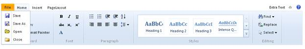

The type of application menu can be chosen from the options of the ApplicationMenuType property. The options provided for the menu types are as follows.
|
Property |
Description |
|
ApplicationMenuType |
Specifies the type of the application submenu. Default value is None. The options included are as follows: · None · ApplicationMenu · BackStagePage |
Application Menu
To render the ribbon with an application menu, set the ApplicationType property to ApplicationMenu.
Using Builder
The following steps explain how to use the AppicationMenuType.
1. In the view, invoke the ribbon helper with the control ID as the first argument and set the ApplicationMenuType as ApplicationMenu.
|
[ASPX] <% Html.Syncfusion().Ribbon("ribbon1").Height(Unit.Pixel(155)) .Width(Unit.Pixel(500)).ApplicationMenuType(AppMenuType.ApplicationMenu).ApplicationMenuText("File").ApplicationMenu(applicationMenu => { applicationMenu.Add().Text("Save").SpriteCSS("text").Children(item => { item.Add().Text("SaveAs").Children(child => { child.Add().Text("Print"); }); }); applicationMenu.Add().Text("Print").Children(item => { item.Add().Text("SaveAs").Children(child => { child.Add().Text("Print"); }); }); applicationMenu.Add().Text("Open"); }).Render();%>
[Razor] @{Html.Syncfusion().Ribbon("ribbon1").Height(System.Web.UI.WebControls.Unit.Pixel(155)).Width(System.Web.UI.WebControls.Unit.Pixel(500)).ApplicationMenuType(AppMenuType.ApplicationMenu).ApplicationMenuText("File ") .ApplicationMenu(applicationMenu => { applicationMenu.Add().Text("Save").ImageUrl("Images/Save16.png").SpriteCSS("text").Children(item => { item.Add().Text("Print").ImageUrl("Images/Clipboard.png"); }); applicationMenu.Add().Text("SaveAs").ImageUrl("Images/saveas16.gif"); }).Render();}
|
2. Build and run the application.

Figure 194: ApplicationMenu